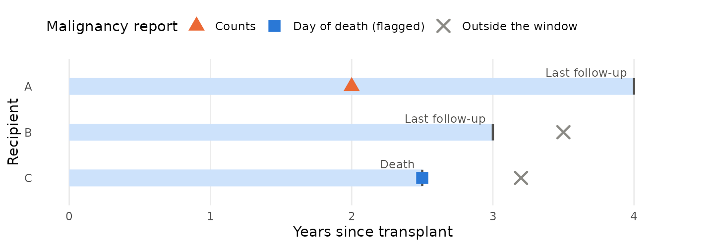

A time-to-event outcome needs three things: a start, an event date, and a date until which the person was watched. SRTR files supply all three, but from different sources that do not always agree. This article shows where they disagree and what that does to an analysis. The companion article, Follow-up forms are reports, not events, covers what the forms themselves record.
As there, the code is not run on this website because it needs real
SAFs. Run it on your own files, compare the naive version with the sRtr
one, and share counts only, masking any count under 11 with the
mask() and mask_n() helpers below. As
explained in the companion article, also avoid sharing counts whose
difference is small: subtraction undoes the masking.
library(sRtr)
library(dplyr)
set_srtr_wd("path/to/your/SAFs")
tx <- load_srtr_file("TX_LI")
# Counts safe to share: any count from 1 to 10 shows as "<11".
mask_n <- function(n) {
noquote(ifelse(n > 0 & n < 11, "<11", format(n, big.mark = ",")))
}
# The same for a frequency table of a column.
mask <- function(x) mask_n(table(x, useNA = "ifany"))A note on add_time_to_event_outcomes().
It builds the death, graft failure, malignancy and rejection outcomes
described here. It is not yet exported, so this article calls it as
sRtr:::add_time_to_event_outcomes(); its name and columns
may change before it is. The other functions used here are exported.
Events count only while someone is watching
Follow-up forms keep arriving after a recipient’s last follow-up date
(TFL_LAFUDATE), and some are dated after death. A report
outside the period the recipient was followed for cannot be paired with
the right censoring: everyone else’s follow-up ends at their last
follow-up date.

The naive approach feeds the first report and the
last follow-up date straight into srtr_time_to_event():
naive <- tx |>
add_txf_outcomes() |>
srtr_time_to_event(
event_date = FIRST_FU_MALIG_DATE,
start_date = REC_TX_DT,
censor_date = TFL_LAFUDATE,
prefix = "MALIG",
units = "days"
)srtr_time_to_event() is a low-level tool: it trusts the
dates it is given. Any non-missing event date counts, even one after the
censoring date. So this counts reports dated after last follow-up and
after death, and it censors recipients who died without a report at
their last follow-up date, which may be after their death. Look at how
often that happens in your files:
naive <- srtr_composite_death(naive)
naive |>
summarise(
report_after_last_follow_up = sum(FIRST_FU_MALIG_DATE > TFL_LAFUDATE, na.rm = TRUE),
report_after_death = sum(FIRST_FU_MALIG_DATE > REC_DEATH_DT_COMPOSITE, na.rm = TRUE),
report_on_day_of_death = sum(FIRST_FU_MALIG_DATE == REC_DEATH_DT_COMPOSITE, na.rm = TRUE)
) |>
mutate(across(everything(), mask_n))With sRtr, malignancy and rejection count only from the transplant date to the earlier of the last follow-up date and death from any source, both inclusive. A recipient without a counted event is censored at the end of that window. A report outside it stays in its date column, so you can see what was left out:
out <- sRtr:::add_time_to_event_outcomes(tx)
left_out <- !is.na(out$FIRST_FU_MALIG_DATE) & out$FIRST_FU_MALIG_DATE_BINARY == 0
mask_n(sum(left_out))With no last follow-up date, the end of the window is unknown. sRtr does not use the death date in its place, because the forms do not show that the recipient was followed up to death; the time is missing instead.
Reports dated on the day of death
On real files, a large number of first malignancy and rejection reports carry the same date as the recipient’s death. Such a report may come from the form filed at death: the malignancy may then have been present well before that date, or the report may describe what was found at death. The flag only compares two dates; it says nothing about whether the malignancy caused the death, which needs cause-of-death data.
sRtr counts these reports by default, since they fall inside the window, and flags them so you can test how much they matter:
mask(out$FIRST_FU_MALIG_DATE_DEATH_DAY)A sensitivity analysis should keep the cohort and everyone’s follow-up time the same, and change only the counted events dated on the day of death. Dropping those recipients instead would also throw away all their earlier time at risk. Because their window already ends at death, their time is the same either way; only the event indicator changes:
reclassified <- out$FIRST_FU_MALIG_DATE_DEATH_DAY %in% TRUE &
out$FIRST_FU_MALIG_DATE_BINARY %in% 1L
sensitivity <- out |>
mutate(
MALIG_SENS_BINARY = if_else(reclassified, 0L, FIRST_FU_MALIG_DATE_BINARY)
)
mask_n(sum(reclassified))These recipients are then censored at death. Death is a competing event for malignancy: say which estimand you want. A cause-specific hazard treats death as censoring, as here; a cumulative incidence needs death coded as a competing event, for example with an Aalen-Johansen estimator.
Which death date?
Death is recorded in three places: the OPTN record
(PERS_OPTN_DEATH_DT), the Social Security death data
(PERS_SSA_DEATH_DT) and the follow-up forms
(TFL_DEATH_DT). They do not always agree.
The naive approach picks one source, often the OPTN date, and misses deaths recorded only elsewhere. Picking the earliest of the three is not safe either: one wrong early date then moves that death.
With sRtr, srtr_composite_death() takes
the first available date in a fixed order (OPTN, then SSA, then the
forms), records the source, and flags recipients whose sources disagree.
add_spread_days = TRUE adds how far apart they are:
d <- srtr_composite_death(tx, add_spread_days = TRUE)
mask(d$REC_DEATH_DT_COMPOSITE_source)
mask(cut(
d$REC_DEATH_DT_COMPOSITE_spread_days,
c(-1, 0, 1, 7, 30, Inf),
labels = c("agree", "1 day", "2-7 days", "8-30 days", "more")
))On real files, most disagreements are a few days, but some are months
or years. conflict_days sets how far apart the sources may
be before the flag is raised; the default, 0, flags any difference. A
larger tolerance is your choice of what counts as recording noise. Even
a one-day difference can matter when the question is about order:
whether a graft failed before the recipient died, or a report fell
before death.
Deaths found after follow-up ends
The Social Security data find deaths long after a recipient stops being followed. If those deaths count as events but survivors are censored at their last follow-up date, the dead are followed for longer than the living, and mortality is overstated.
mask_n(sum(d$REC_DEATH_DT_COMPOSITE > d$TFL_LAFUDATE, na.rm = TRUE))add_time_to_event_outcomes() offers two consistent
choices through death_window. The default,
"follow_up", counts deaths on or before the last follow-up
date and censors everyone else there. "ascertainment"
shares the principle of the SRTR program-specific reports: deaths from
any source count up to an ascertainment date, and everyone else is
assumed alive and censored at that date. Take the date from your SAF
release notes.
It does not reproduce the published patient survival estimates. Those
draw on death sources that srtr_composite_death() does not
combine, and report survival at fixed times after transplant; see SRTR
Technical Methods for the Program-Specific Reports, Section C.
out_ascertainment <- sRtr:::add_time_to_event_outcomes(
tx,
death_window = "ascertainment",
ascertainment_date = "YYYY-MM-DD" # from the release notes
)Graft failure and death on the same day
Graft failure (TFL_GRAFT_DT) is often dated on the day
of death. The data dictionary does not say whether that date is filled
in with the death date when a recipient dies with a working graft, or
marks a real failure.
sRtr treats graft failure as death-censored: a failure dated after
death does not count, and a graft without a failure is censored at the
earlier of its last follow-up date and death. By default, a failure on
the day of death counts as death with a working graft
(graft_death_same_day = "censor"). That is a package
assumption, not an SRTR rule, so run both:
as_event <- sRtr:::add_time_to_event_outcomes(tx, graft_death_same_day = "event")Whose follow-up?
Some outcomes belong to the patient and some to the graft. Malignancy
and death use the patient’s last follow-up date; graft failure and
rejection use the graft’s. In most files these are the same date. In
kidney-pancreas files (TX_KP) each graft has its own last
follow-up date (TFL_LAFUDATEKI,
TFL_LAFUDATEPA), so sRtr gives rejection and graft failure
one set of columns per graft, and uses the later of the two dates for
patient outcomes. A rejection reported on the kidney’s form does not
count for the pancreas, and a kidney form saying “no rejection” does not
bound a pancreas rejection.
Checklist
- Count an event only inside the window the person or graft was followed for, and censor everyone else at the end of the same window.
- Use a time-to-event helper that knows the window, or check your
dates first:
srtr_time_to_event()trusts what it is given. - Decide what to do with reports dated on the day of death: keep the cohort and follow-up time fixed, reclassify only those events, and run the analysis both ways.
- Use one death date consistently, know its source, and look at how far apart the sources are.
- Count deaths and censor survivors over the same period:
death_window. - Run graft failure both ways for failures on the day of death.
- For kidney-pancreas, use each graft’s own follow-up.